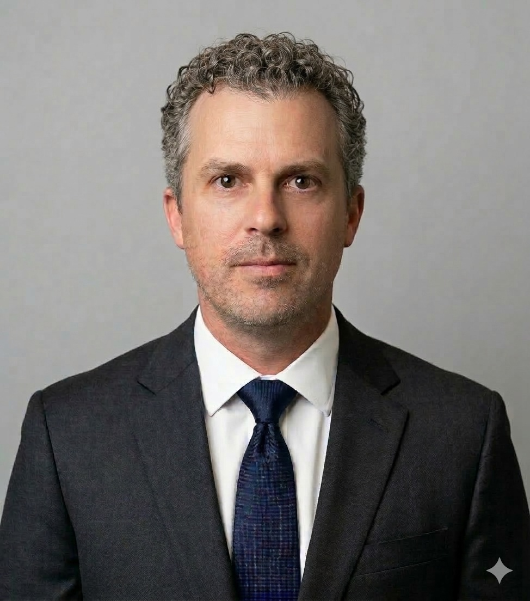

Senior consultants with deep domain expertise — not generalists, not offshore teams. We bring real-world experience to every engagement.
Dierk has worked in the SaaS technology space for over a decade, having helped multiple early-stage startups scale to acquisition. His experience spans industries including ecommerce, online advertising, and supply chain risk management — giving him a rare cross-sector perspective on how technology decisions ripple through an organization.
A fierce customer advocate, Dierk specializes in bridging the gap between customer experience and technical architecture. He embeds with businesses to ensure that technical goals are always grounded in real customer needs — translating complex systems challenges into clear, actionable strategies.

Randall has spent nearly two decades building his expertise as a hospitality professional and restauranteur. From serving as a regional manager for international brands like Buffalo Wild Wings to operating his own restaurant as an owner-operator, he brings hands-on knowledge of what it takes to run a high-volume, customer-facing business at every level.
Leveraging his deep industry network, Randall transitioned into the sports analysis and management space, where he has become an in-demand analyst and podcast host. He brings the same operational rigor from the restaurant world to sports consulting — connecting front-office strategy with on-the-ground execution.
Whether you're navigating supply chain complexity, scaling a hospitality operation, or breaking into the sports industry — we've been there. Let's talk.
Get In Touch